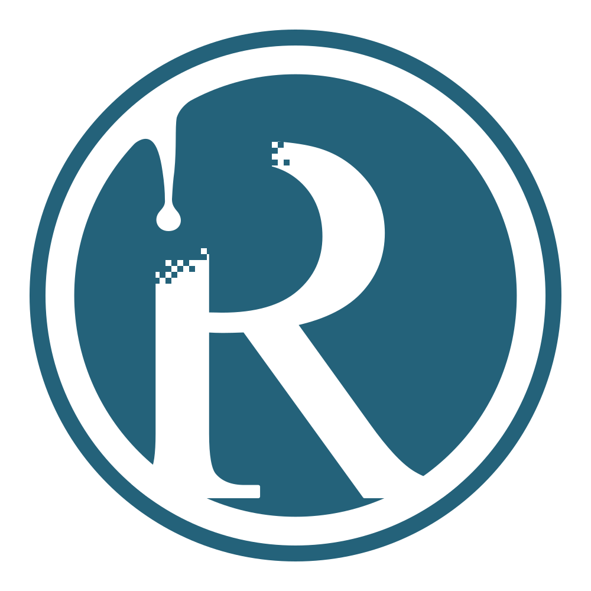

<!doctype html><html lang="ja"><meta charset="utf-8"><title>RecastPress / WordPress</title><style>*{box-sizing:border-box}body{margin:0;background:#fff;color:#26333b;font-family:Arial,"Yu Gothic",sans-serif}.page{width:1360px;margin:auto;padding:52px 60px}header{font-size:16px;letter-spacing:.1em;color:#677780;margin-bottom:28px}.grid{display:grid;grid-template-columns:1fr 1fr;gap:60px}.col{text-align:center}.col+.col{border-left:1px solid #e1e6e9;padding-left:30px}.title{font-size:27px;margin:0 0 9px}.sub{font-size:14px;color:#64737e;margin:0 0 25px}.mark{width:420px;height:420px;position:relative;overflow:hidden;margin:auto;background:white}.mark img{position:absolute;max-width:none;left:50%;top:50%;transform:translate(-50%,-50%)}.recast img{width:466.667px;height:466.667px;margin-top:0px}.wp img{width:630px;height:630px}.smallrow{height:100px;display:flex;justify-content:center;align-items:center;gap:35px;margin-top:23px}.small{width:64px;height:64px;margin:0}.small.recast img{width:71.111px;height:71.111px;margin-top:0px}.small.wp img{width:96px;height:96px}.tiny{width:32px;height:32px}.tiny.recast img{width:35.556px;height:35.556px;margin-top:0px}.tiny.wp img{width:48px;height:48px}.sizes{font-size:12px;color:#74818a}footer{margin-top:26px;padding-top:20px;border-top:1px solid #e1e6e9;font-size:13px;color:#71808a;line-height:1.8}</style><main class="page"><header>LOGO COMPARISON · CONCEPT 09</header><div class="grid"><section class="col"><h1 class="title">RecastPress</h1><p class="sub">曲線で太く始まるタレ · 大きな丸い先端 · 字から離す</p><div class="mark recast"></div><div class="smallrow"><div class="mark small recast"></div><div class="mark small tiny recast"></div><span class="sizes">64 / 32 px</span></div></section><section class="col"><h2 class="title">WordPress</h2><p class="sub">公式 W マーク（配布色のまま）</p><div class="mark wp"></div><div class="smallrow"><div class="mark small wp"></div><div class="mark small tiny wp"></div><span class="sizes">64 / 32 px</span></div></section></div><footer>円の直径を揃えた比較。RecastPress は通常フォントの輪郭を用いた SVG。<br>WordPress reference: wordpress.org/about/logos/ · Official PNG, unmodified.</footer></main></html>


